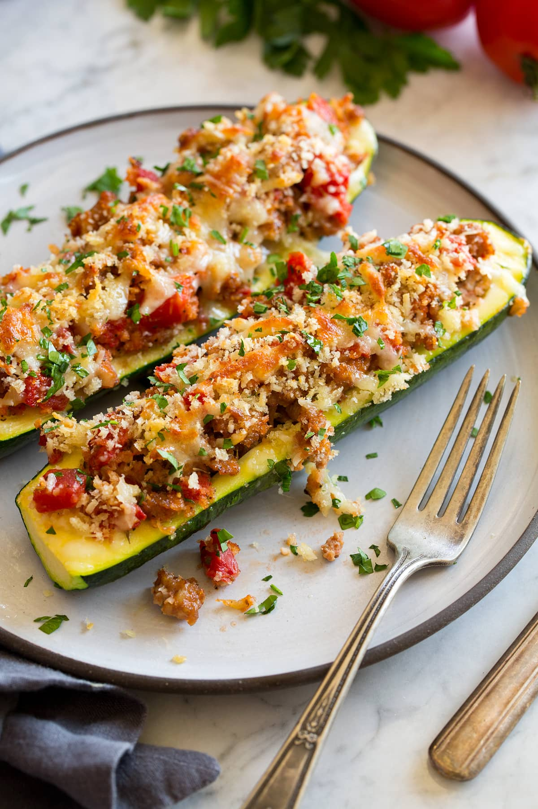

Sausage Stuffed Zucchini Boat

Description
Enjoy a flavorful recipe combining the sweetness of zucchini and the spicy taste of sausage
Ingredients
- 4 medium zucchini, each cut in half lengthwise
- 1 tablespoon olive oil
- 16 ounces loose Italian sausage, hot or sweet
- 1 small white onion, chopped
- 1 clove garlic, minced
- 2 medium tomatoes, chopped
- Kosher salt and freshly ground black peppper
- 1/2 cup Parmesan cheese, grated
- 1/2 cup Mozzarella cheese, shaved
- 1/4 cup breadcrumbs
- 2 tablespoons fresh parsley, chopped
Directions
- Preheat the oven to 400 degrees F (204.4 C).
- Using a teaspoon, scoop interior of zucchini, so they can resemble boats.
- Place zucchini boats in a 9-by-13-inch casserole dish.
- Using a medium saute pan over medium heat, add the olove oil and let heat through. Add the Italian sausage and cook for 4 minutes.
- Add the garlic, onion, chopped zucchini flesh, tomatoes, and some salt and pepper. Cook until softened, about 4 minutes.
- In a medium bowl, add the parmesan, mozzarella, breadcrumbs, and parsley; mix to combine.
- Spoon in and mound the sausage mixture into the zucchini boats. Sprinkle the breadcrumb mixture over top. Place in oven and bake until golden on top, 20 minutes.
Recipe Source
Food Network: Sausage-Stuffed Zucchini Boats